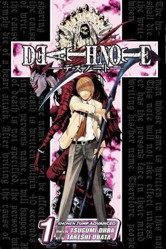
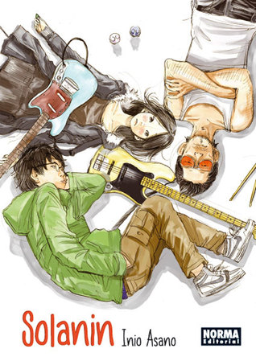
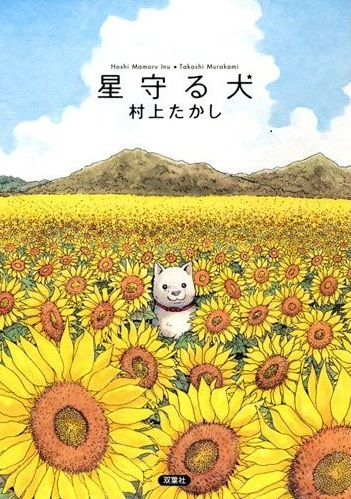
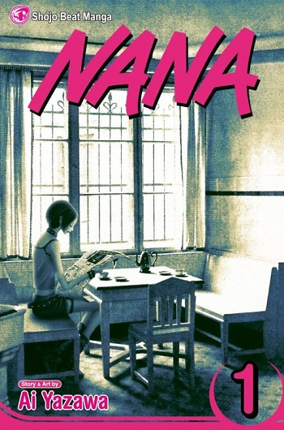
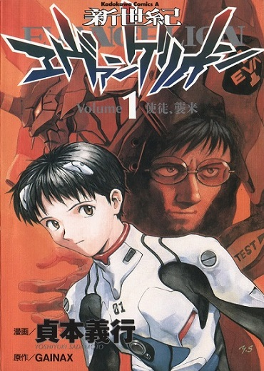
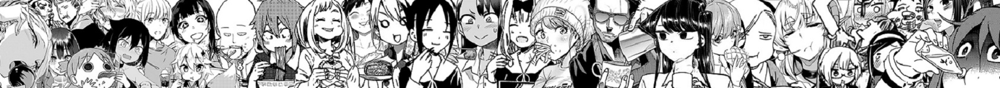

Light Yagami is a top student who is bored with monotony. One day, his life takes a 180º turn when he finds a notebook that says ''Death Note''. But it's not just any notebook. Just by writing a person's name while thinking of their face, that person dies of a heart attack.
5 Rookie MANGAS

If you are interested in experiencing the world of manga, here are 5 mangas. These are short readings ideal to appreciate and give you your own opinion about the world of Japanese comics.

----- #1 -------
Name: Death Note
Written by : Tsugumi Ohba
Illustrated by: Tsugumi Obata
Genre: Shonen
Death Note is the most successful detective novel in the world of manga. It is a story that combines suspense with intrigue, a notable example of the definition of Real Marvelous; without a doubt, it is a safe choice to start reading manga if you like the police novel; this is an opportunity that you should not miss.
Rate this MANGA

----- #2 -------
Name: Solanin
Written by : Inio Asano
Illustrated by: Inio Asano
Genre: Seinen
Solanin is a story that characterizes the demography of the Seinen, a tale of everyday life that combines music with romance. At first, it looks like a quiet story but the emotional charge carried by the characters is incredible.
Like any young couple just out of college, Meiko and Taneda still need to set a goal to follow. They try to face the difficulties of two normal graduates until they have to make two important decisions, which will change the course of history: Meiko quit her job and Taneda create the first original song for her band.
Rate this MANGA

----- #3 -------
Name: Stargazing Dog
Written by : Takashi Murakani
Illustrated by: Takashi Murakani
Genre: Seinen
Hoshi Mamoru, or Stargazing dog, is a heartbreaking and cute story at the same time. It is one of those stories that leave you thinking about the world in which we live, friendship and unconditional love are part of the two protagonists, a man with a fatal future and a dog, that would never leave his side.
A middle-aged man abandoned by his family feels that his life has not gone the way he had planned. So finally, he decides to go on a road trip and leave everything behind. However, he soon discovers that he can only trust the dog he inherits from the family that abandons him.
Rate this MANGA

----- #4 -------
Name: NANA
Written by : Ai Yazawa
Illustrated by: Ai Yazawa
Genre: Josei
Manga belonging to the josei demographic (female adult audience), one of the most important works of its genre, focused on dramatic and dark romance, very much in the punk style of the 80s in Japan, a story for people seeking a different type of romance.
Two girls who share the same name, Nana, from two different worlds, come together by chance. Nana Osaki, singer of a punk group with the desire to debut in the world of music, and Nana Komatsu (Hachi), infatuated, pampered, and innocent, who is chasing her boyfriend to Tokyo. They meet during the train ride they both have to take to the big city, and that moment will make their world turn 180 degrees.
Rate this MANGA

----- #5 -------
Name: Neon Genesis Evangelion
Written by : Yoshiyuki Sadamoto
Illustrated by: Yoshiyuki Sadamoto
Genre: Shonen
Suppose you are a fan of Franz Kafka's stories. In that case, this manga is a science fiction delight, a world attacked by giant beings, with a counterpart with tremendous biological robot technology, a perfect combination for lovers of this genre. However, this manga has caused so much success worldwide that fans still need to be satisfied with its unexpected ending.
The manga begins in the year 2015 of the Christian era, fifteen years after the disastrous first contact with mysterious beings known as angels, which resulted in a worldwide cataclysm called Second Impact, which halved the human population in the earth.
Rate this MANGA

© 2022 Javier Torruella Alegria